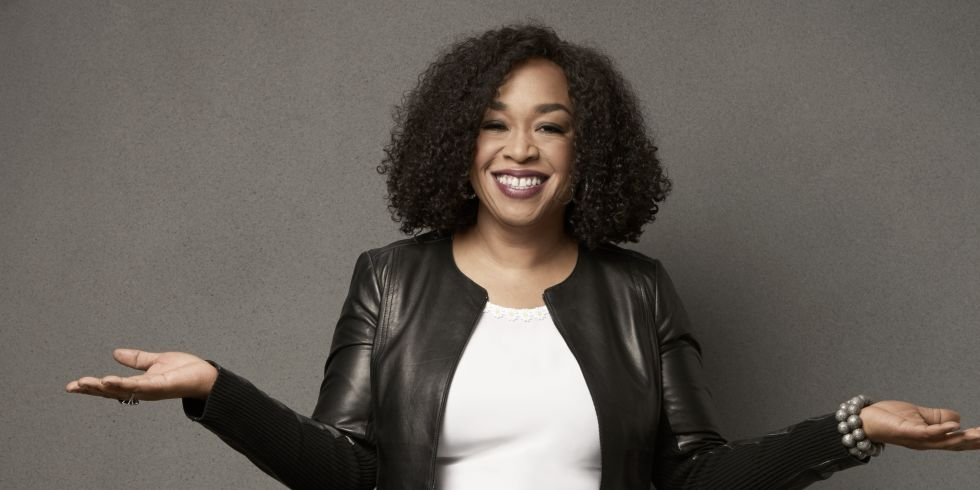

Shonda Rhimes

Início da vida
Crescendo com sua mãe (professora), pai (administrador da universidade) e cinco irmãos em Park
Forest South, Illinois, Shonda Rhimes exibiu uma afinidade cedo para contar histórias e o seu
trabalho como voluntária em um hospital durante a Universidade despertou interesse em ambientes
hospitalares.[2]
Rhimes participou do Marian Catholic High School, Dartmouth College e ganhou um diploma de
bacharel. Em Dartmouth, ela dividiu seu tempo entre dirigir e atuar em peças teatrais estudantis
e ficção. Após a faculdade, ela se mudou para São Francisco com um irmão mais velho e arranjou
um emprego em publicidade para pagar as contas. Mas seu desejo de criar superou sua necessidade
de estabilidade financeira, e ela dirigiu-se para Los Angeles para estudar na USC School of
Cinematic Arts.[3]
Carreira
Após a formatura, ela trabalhou em uma variedade de trabalhos, inclusive como administradora do
escritório, e depois como conselheira de um centro de trabalho. Durante este período, Rhimes
também trabalhou como diretora de pesquisa em 1995. Fez sua estreia como diretora em 1998 no
curta-metragem Blossoms and Veils, estrelado por Jada Pinkett-Smith e Jeffrey Wright.[
Em 1999, Rhimes escreveu o roteiro do filme Introducing Dorothy Dandridge para HBO. Mudou-se para
a Disney, onde produziu o filme de 2001, O Diário da Princesa. Escreveu a comédia dramática
Crossroads em 2002 - a estreia no cinema da cantora pop Britney Spears. Embora, o filme de
2004, The Princess Diaries 2: Royal Engagement não rendeu na bilheteria como seu antecessor,
Rhimes disse mais tarde que a experiência para ela foi ter a oportunidade de trabalhar com sua
estrela, Julie Andrews.
Por passar muito tempo em casa, Rhimes se viu viciada em programas como o drama da The WB
Television Network, Buffy the Vampire Slayer (1997-2003) e The Sopranos, da HBO, bem como a
série de documentários médicos no Discovery Channel. Rhimes decidiu tentar criar uma série de
televisão, escreveu o piloto de Grey's Anatomy no final de 2003, e recebeu a luz verde para
começar com o projeto em 2004.
Grey's Anatomy
Rhimes é a criadora e produtora executiva de Grey's Anatomy. A série da ABC estreou em 25 de
março de 2005. O espetáculo mostra a rotina e a vida pessoal de Meredith Grey (Ellen Pompeo) e
de seus colegas em um hospital de Seattle, o Grey Sloan Memorial Hospital
Private Practice
Shonda Rhimes é a roteirista e produtora executiva de Private Practice, spin-off de Grey's
Anatomy. A série estreou em 26 de setembro de 2007 na ABC. O espetáculo narra a vida da Dra.
Addison Montgomery (Kate Walsh) quando ela deixa o Seattle Grace Hospital e se muda para Los
Angeles para participar de uma clínica privada.
Scandal
Em maio de 2011, a ABC aprovou o piloto escrito por Rhimes da série intitulada Scandal. Conta a
história de Olivia Pope (Kerry Washington), ex-consultora da Casa Branca que cuida da imagem do
presidente.[7]
How to get Away with Murder
Estreado em Setembro de 2014, a série é sucesso de público e crítica e tem como produtora
executiva Shonda Rhimes. A protagonista, Viola Davis, recebeu inúmeras indicações de premiação
pela sua atuação na série.
Acordo com a Netflix
Em 14 de agosto de 2017, a Netflix anunciou que havia fechado um contrato exclusivo de
desenvolvimento de vários anos com a Rhimes, segundo o qual todas as suas futuras produções
serão da série Original Netflix. O serviço já havia adquirido direitos de streaming dos EUA para
episódios anteriores de Grey's Anatomy e Scandal. O diretor de conteúdo Ted Sarandos descreveu
Rhimes como sendo uma "verdadeira Netflixer no coração", já que "ela ama a TV e os filmes, ela
se preocupa apaixonadamente com seu trabalho, e entrega para o público".[9]
O acordo foi considerado uma estratégia da Netflix devido à proeminência de Rhimes na ABC; também
foi considerado um contraponto ao esforço da Disney, empresa controladora da ABC, de reduzir a
disponibilidade de seu conteúdo na Netflix em favor de um serviço de streaming por assinatura
planejado.[10]
Em junho de 2018, a Netflix anunciou que um de seus primeiros projetos sob o acordo será uma
adaptação da história da revista New York, How Anna Delvey Tricked New York Party People
intitulada Inventing Anna, originalmente escrito por Jessica Pressler baseado na história da
vida real da polêmica fraude sociedade Anna Delvey.[11] Em dezembro de 2020 foi lançada a
primeira série produzida por Shonda para Netflix, Bridgerton.